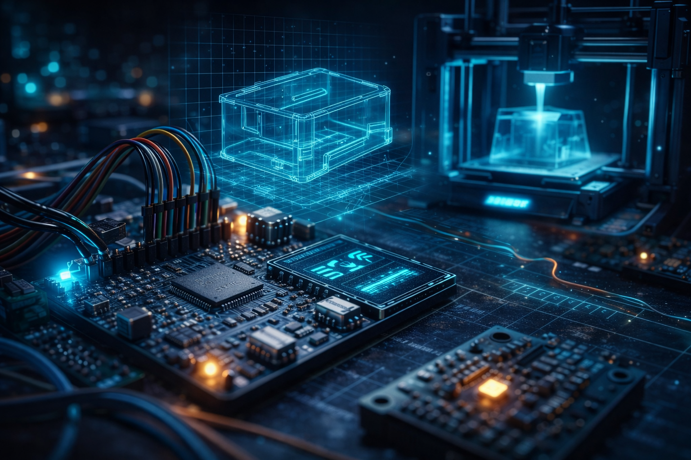

01
Електроніка та друковані плати
Схемотехніка, підбір компонентів, розробка друкованих плат, інтеграція сенсорів, живлення, інтерфейси та підготовка прототипів до перевірки.
Інженерна група для прикладних технічних задач та досліджень
Розробляємо електронні пристрої, прошивки, сенсорні модулі, системи телеметрії та додатки для збору, передачі й візуалізації даних. Працюємо від технічної ідеї до дослідного зразка та підготовки рішення до практичного використання.

Що ми робимо
Ми поєднуємо embedded-розробку, електроніку, програмне забезпечення, сенсори, телеметрію та 3D-прототипування. Основний формат роботи — поетапне НДДКР (науково-дослідні та дослідно-конструкторські роботи): аналіз задачі, розробка електронної схеми, програмного забезпечення, макета, тестування, доопрацювання і підготовка до впровадження.
Схемотехніка, підбір компонентів, розробка друкованих плат, інтеграція сенсорів, живлення, інтерфейси та підготовка прототипів до перевірки.
Розробка прошивок STM32, AVR, ESP32, робота з датчиками, логікою керування, бездротовими каналами і телеметрією.
Збір даних, API, бази даних, вебпанелі, графіки, журнали подій, інструменти контролю та аналізу результатів тестування.
Розробка моделей корпусів, кріплень, швидкі ітерації, якість конструкції та підготовка малих серій.
Для кого
Ми корисні там, де стандартного пристрою недостатньо, а задачу потрібно швидко перевірити на практиці. Працюємо з нестандартними умовами, обмеженим простором, вимогами до автономності, передачі даних, надійності та зручності експлуатації.
Розробка та адаптація електроніки й прошивок під конкретні умови використання.
Допоміжні електронні модулі для мобільних платформ, польових систем та технічних засобів спеціального призначення.
Розробка сенсорних модулів, присутності, руху, вібрації, просторового положення тощо.
Панелі візуалізації телеметрії, вимірювань, станів пристроїв і подій.
Як працюємо
Збираємо вимоги, умови експлуатації, обмеження і критерії успіху.
Фіксуємо обсяг робіт, ризики, бюджет, строки та очікуваний результат першого етапу.
Розробляємо макет, прошивку, механіку або програмну частину для перевірки ідеї.
Збираємо зауваження, аналізуємо дані, покращуємо конструкцію, алгоритми та інтерфейс.
Готуємо рішення до малосерійного виготовлення або практичного застосування.
Почати співпрацю
Опишіть проблему, бажаний результат і умови експлуатації. Запропонуємо реалістичний перший етап без зайвих обіцянок.